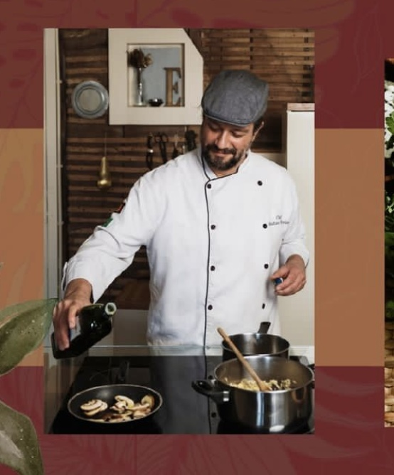

Mais que um jantar .
Um projeto onde a experiência em mexer com todos os sentidos é primordial.
Com menu inspirado no mestre impressionista e desenvolvido com exclusividade a cada evento, o jantar Monet à Mesa conta com releituras das receitas de Giverny com harmonizações vínicas.
A idealizadora
A Chef Cris Mota, graduada em gastronomia no Brasil, se consagrou sendo a primeira mulher a vencer a competição televisiva Hell´s Kitchen no país. Foi homenageada pela agência nacional de cultura e empreendedorismo como chef revelação no Brasil, e vem aperfeiçoando técnicas. Passou pela escola do Chef Laurent Suaudeau, pariticipou de workshop pela Le Cordon Bleu Paris. Quando soube que existia um livro publicado com as receitas que a então esposa de Claude Monet anotava, fez uma viagem a Europa conseguiu encontrar o livro, foi até Giverny e fez uma visita conhecendo a casa e os jardins onde Monet viveu e se inspirou. A partir daí surgiu a idéia do projeto.
Um passeio por Giverny
Giverny - França
Nota da Imprensa
Parceiro
Gustavo Ferreira é Chef de cozinha no renomado restaurante No Mundo de Luisa localizado no Porto. É entusiasta e faz parte do projeto.
Apoio

Contato
cm.crismota@gmail.com